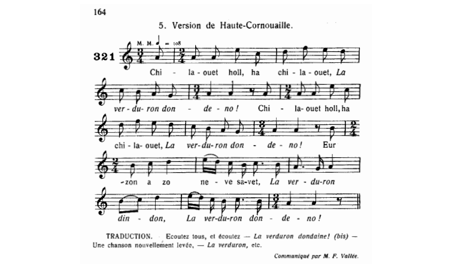

|
Ar plac'h marv e-kreiz he c'hoant [1] 1. Silaouet holl, O silaouet, Laverduron dondeno, Silaouet holl, O silaouet, Laverduron dondeno, Ur zon a zo nevez-savet Laverduron dindon, Laverduron dondeno, 2. À zo savet d'ur plac'h yaouank A zo marv e-kreiz he c'hoant, 3. 0 sel't ur milouer arc'hant He-devoa bet gant he galant. 4. He mamm a lare d'ei un deiz : 0 ma merc'h, koantañ plac'h out-te ! 5. Petra a dâlv din bezout koant Pa na c'hellàn kavout ma c'hoant ? 6. Gwell eo ma c'hoant da blijout din 'Vit n'eo madaou pa ne fell din. 7. Madaou a ya, madaou a da, Karantez jamez na guita. [2] 8. Gwell eo karantez leizh an dorn 'Vit n'eo madaou daou leizh ar forn. [2] 9. Tevet, ma merc'h, n'em chifet ket ; Arc'hoazh me yey da Zant-Brieg, 10. A digaso dac'h ur c'hloareg, Ar c'hoantañ 'vo en Sant-Brieg. 11. 'Benn ve'et bet en Sant-Brieg Me vo marv hag interet. 12. Lakait ma bez 'kreiz ar vered Ha warnezhañ pevar boked. 13. Daou a re c'hlas, daou a re wenn, Da gas ar c'hanvoù d'an daou benn ;[3] 14. Daou a re wenn, daou a re c'hlas, Da gas ar c'hanvoù paz da baz. [3] 15. Broman ec'h aruey miz mae E tey ar skolerien d'ar ger. 16. Pa dremenint er berejaou E weliant ar bokedaou. 17. Ar bokedaou a weliant, War o daoulin mont a riant. 18. War o daoulin mont a riant, Peb a bâter a lariant, 19. Peb a bâter, peb a ave , Peb a requiescat in pace. 20. Benoaz Doue war an ine Zo eit an div'zan er bez-ze ! 21. Broman ec'h aruey an hanv Hag e kano al laouenan, 22. Al laouenan hag an estig, Ar goukou hag an houpedig. |
La Fille qui mourut du désir de se marier 1. Ecoutez tous, Oh, écoutez Laverduron dondeno, Ecoutez tous, Oh, écoutez Laverduron dondeno, Le chant qu'on vient de composer, Laverduron dindon, Laverduron dondeno, 2. En l'honneur d'une belle enfant Qui mourut de désir ardent, 3. Regardant un miroir d'argent Qu'elle avait eu de son galant, 4. A qui sa mère un jour disait: Vous êtes jolie à souhait! 5. - Etre jolie, la belle affaire Quand on ne fait rien pour me plaire! 6. Non rien pour exaucer mes voeux Gardez vos biens dont je ne veux! 7. Les biens s'en viennent et s'en vont, Seul l'amour garde la maison. 8. Et mieux vaut d'amour plein la main Que de biens deux fois son four plein. 9. -Taisez-vous donc! Sêchez vos yeux ; Demain je vais à Saint-Brieuc, 10. Je m'en vais vous trouver un clerc, Le plus beau joli de l'univers. 11. D'ici que vous soyez rentrée, Je serai morte et enterrée: 12. Que ma tombe soit au milieu Du cimetière et ornée de. 13. Quatre fleurs: deux blanches, deux bleues, Deuil à chaque bout de la queue! 14. Deux blanches et deux bleues, de quoi, Conduire le deuil pas à pas. 15. Bientôt viendra le mois de mai Et rentreront les écoliers. 16. Dans le cimetièr en passant, Ils verront les fleurs sûrement. 17. Pour sûr, ces fleurs ils les verront, Et à genoux ils se mettront. 18. Ils mettront les genoux à ter- re et diront chacun un pater, 19. Chacun un pater, un ave, Un requiescat in pace. 20. Que l'âme soit bénie de Dieu, Ici venue en dernièr lieu! 21. Désormais va fleurir l'été Et chantera le roitelet, 22. Le rossignol au chant si doux Avec la huppe et le coucou. Traduction: Christian Souchon (c) 2023 |
The Lass Who Died Wanting to Get Married 1. O Listen, listen, everyone Laverduron dondeno, O Listen, listen, everyone Laverduron dondeno, We've just composed a new song Laverduron dindon, Laverduron dondeno, 2. We've composed a new song about A lass who died having a bout 3. Of sadness while she looked at A mirror offered by a lad. 4. Her mother that day said to her: My daughter, how pretty you are! 5. - What's the use of looking that fine? Just let come true a wish of mine! 6. Fulfill my wish and you'll please me More than with riches, don't you see? 7. For riches come and riches go, Forever love stays, don't you know? 8. A handful of true love is more Worth than ovenfuls of gold ore. 9. - Daughter, be quiet, tomorrow I Will go to Saint-Brieuc, don't cry! 10. I will bring back a clerk, I'll do, The handsomest one will be for you. 11. - By the time you come back from there I'll be dead and buried, I swear. 12. Amid the graves, O right amid. My grave be with flowers on it. 13. Two bunches blue, two bunches white: To help the mourners keep upright; 14. Two bunches white, two bunches blue, To help the mourners keep pace, too. 15. Now when the month of May will come Town students are sure to come home. 16. Through the cemetery when they pass They will see the flowers. alas! 17. They will see the flowers and all Of them on their knees they will fall. 18. On their knees they will fall and pray. Each of them a pater will say, 19. Each a pater, each an ave, Each a requiescat in pace. 20. The blessing of God on her whom They laid at last into this tomb! - 21. Presently summer will be here The birds on the bows we shall hear, 22. The Wren, the Wren, the Nightingale, The Cuckoo, the Hoopoe as well. |
|
[1] Il existe d'autres chansons sur le même thème - chez Guillerm: . Même titre: version Troboas (1), . Même titre: version Laz (2), - dans les manuscripts de Penguern: La mort du clerc - dans le Barzhaz Breizh: "Les Miroirs d'argent".etc. Il s'agit d'un chant très répandu, repéré sous le n° M-1029 dans la classification de Patrick Malrieu, qui en énumère pas moins de 41 versions et 59 occurrences. En général, le désir de mariage de la jeune beauté est désincarné, ou, si l'âme soeur existe, comme dans le cas présent, c'est de l'histoire ancienne. Cependant le miroir qu'elle a reçu de cet ancien soupirant, ravive son désir inassouvi. L'étonnante proposition de la mère de ramener un "clerc" (kloareg) de Saint-Brieuc ne figure que dans quelques versions, tout comme l'évocation finale du chant des oiseaux qui reviendront avec l'été. [2] Ces 2 proverbes sont souvent cités ensemble dans les "sonioù". [3] On parle ici du deuil comme d'une danse en chaine, ce que confirme la mélodie. Une version notée par le Colonel Bourgeois, '"Ur plac'h yaouank d'eus-a Wengamp", (Une jeune fille de Guingamp) indique: "Ha daou re wenn ha daou re zu / Da gas ar c'hañv en daou du", "Et deux fleurs blanches et deux fleurs noires / Pour répandre le deuil des deux côtés [du cimetière]". Visiblement , le mot "plas" (emplacement [de tombe]) a été déformé en "paz" (pas). |
[1] Lots of other songs with the same topic are found - in Guillerm's collection: . Same title: Troboaz version (1), . Same title: Laz version (2), - in the Penguern MSs: The dead clerk in the Barzhaz Breizh: "The silver mirrors", etc. It is a very widespread song, entered under item M-1029 in Patrick Malrieu's classification, which lists no less than 41 versions and 59 occurrences of it. As a rule, the young beauty's desire for marriage does not apply to a specific soul mate. But in the present case, it is a mirror she received from a former suitor that kindles her unfulfilled desire. The astonishing proposal of the girl's mother to bring a "clerk" (student) from Saint-Brieuc is specific to certain versions, as is the hopeful evocation of the singing of birds which will return with the summer. [2] This proverb is often quoted together in "sonioù" (merry folk songs). [3] They speak here of mourning as a chain dance attuned to the merry melody of the song . A version noted by Colonel Bourgeois, '"Ur plac'h yaouank d'eus-a Wengamp", (A young girl from Guingamp) reads: "Ha daou re wenn ha daou re zu / Da gas ar c'hañv en daou du", "And two white flowers and two black flowers / To expand mourning on both sides [of the cemetery]". Obviously, the word "plas" (site [of the grave]) has been deformed into "paz" (step)! |